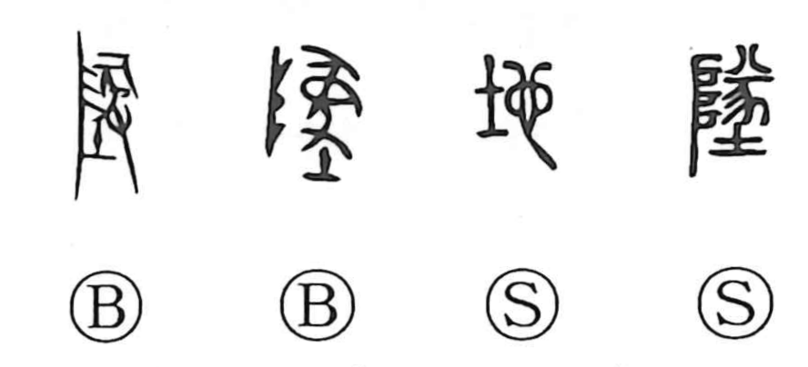

Explanation
地 combines 土, earth, with 也 as its phonetic. An earlier word for the ground was written with the formation later represented by 墜. That older composition shows an offering before 阜, the sacred stairway by which a deity ascends and descends, together with the earth deity 土. The place is where the god sets foot.
As the older writing came to mean falling or dropping, a new phonetic character distinguished the land sense: 土 supplied the domain and 也 the sound. The original ritual place thus stands behind a later, more generally applicable writing.
地 names land, soil, a locality, or a country. It can also indicate the ground on which something rests, extending to a person's position or circumstances and to a material's underlying texture or base.